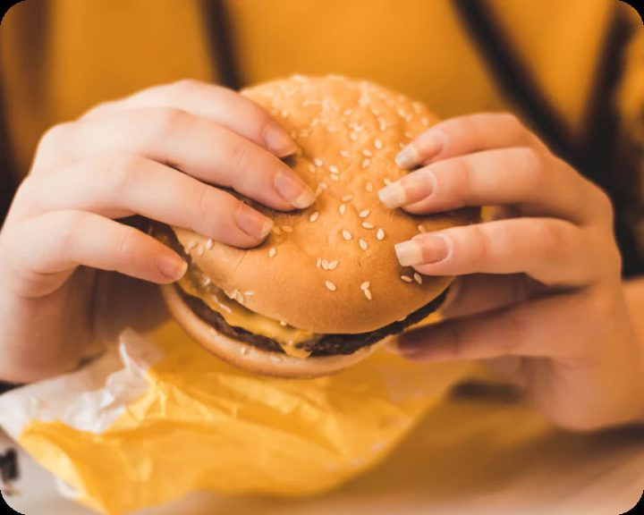
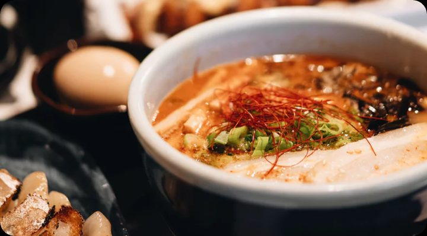
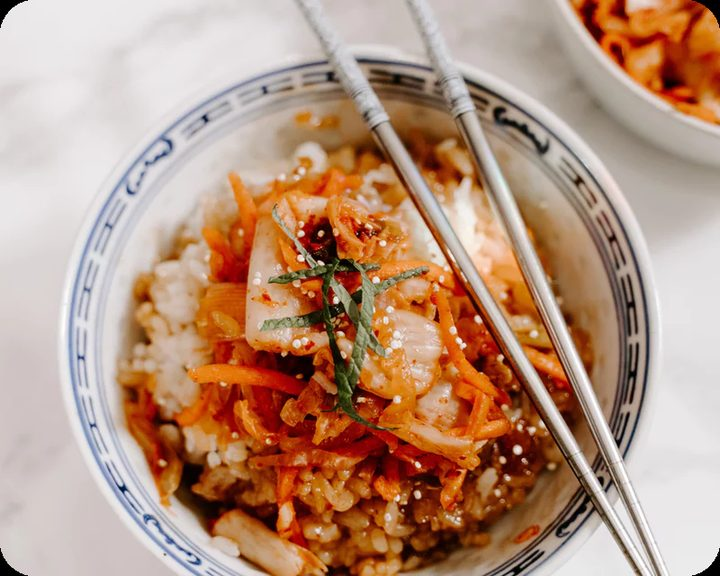
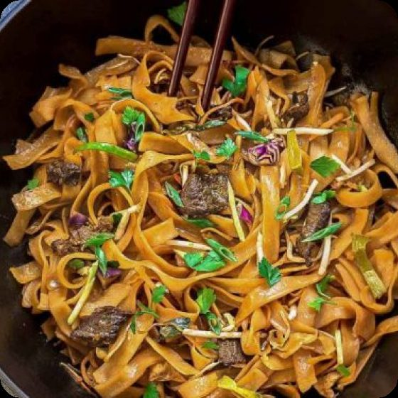
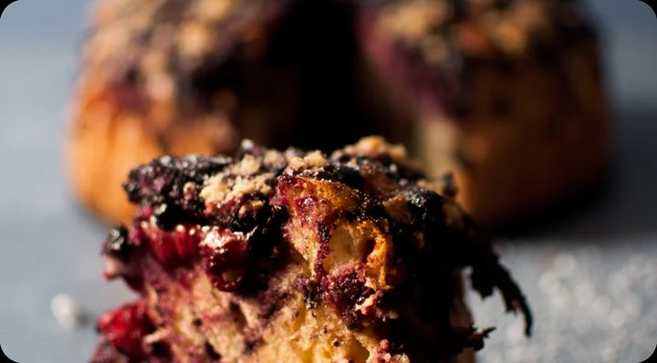
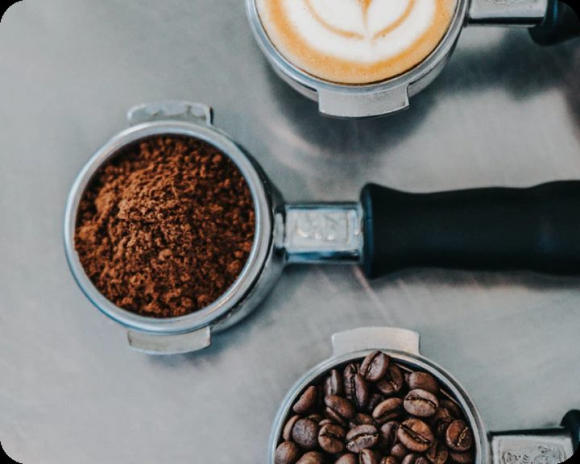
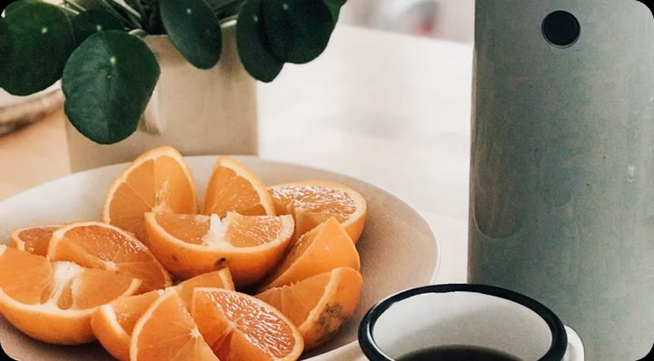
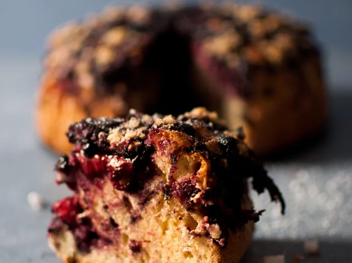
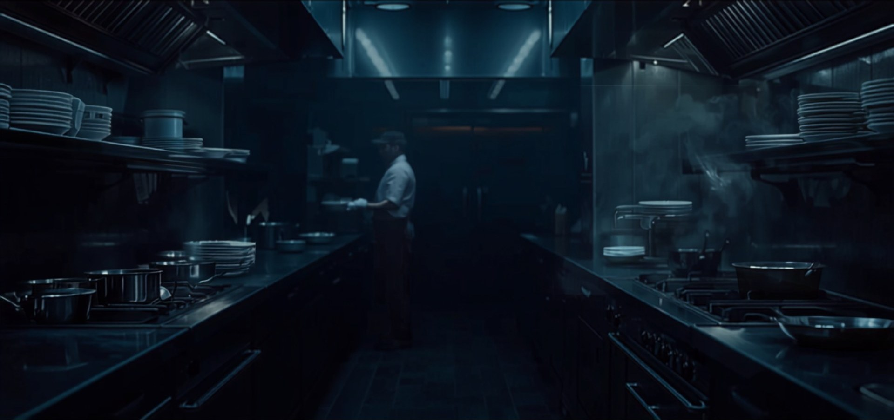

منصة توصيل سعودية تجمع مطاعمك المفضلة في تطبيق واحد: توصيل سريع، وتتبع لحظي لطلبك من المطبخ حتى بابك.
منصّةٌ واحدة وثلاثة أبواب: تطلب، أو تبيع، أو توصّل.
لا حسابات ولا تعقيد — تتصفّح أولاً، ولا نطلب تسجيلك إلا عند الطلب.
مطاعمك المفضلة بصور حقيقية وأسعار كاملة أمامك.
من قبول المطعم حتى انطلاق مندوبك — خطوة بخطوة على الخريطة.
وادفع كما يناسبك: بطاقة، كاش، أو محفظتك.
أصنافٌ تصلك ساخنة كما خرجت من المطبخ — اسحب لترى المزيد.

برجر
رامن
أرز بالكيمتشي
نودلز باللحم
كيك التوت
قهوة مختصّة
فطور خفيف
حلا البيتثلاثة وعود نقيس أنفسنا بها — ومكتوبةٌ في نظامنا لا في إعلاننا.
الصدق في السعر: السعر الذي تراه هو الذي تدفعه — لا رسوم خفية في نهاية الطلب.
الصدق في الصورة: صور حقيقية للأطباق من مطابخ شركائنا — ما تراه هو ما يصلك.
الصدق في الوقت: تتبع مباشر من المطبخ حتى بابك، وتعرف أولاً بأول أين طلبك.
مدى وبطاقة، كاش عند الاستلام، أو محفظتك في التطبيق.
موقع مندوبك أولاً بأول حتى باب بيتك.
خصومات حقيقية بلا شروط مخفية.
من عملاء طلبوا فعلاً — لا مجاملات.
لكل صنف قبل أن تطلب.
كل ريال واضح: الوجبة والتوصيل بلا دمج.

عملاء جدد يصلونك من اليوم الأول — بلا أي تكلفة تأسيس. منيوك الرقمي بصورك وأسعارك، وطلباتك تصل مطبخك لحظة وقوعها، وتقارير تُطلعك على كل ريال — ومستحقاتك بحساب مكشوف أمامك.
أرباح واضحة: نصيبك من كل توصيلة معروف قبل قبولها — ومحفظة ترصد كل ريال.
حرية الوقت: اتصل متى شئت، واستلم الطلبات القريبة منك.
إنصاف التقييم: نظام تقييم شفاف يحمي المجتهد.